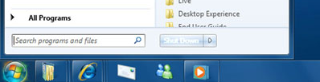
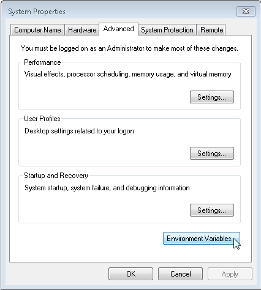
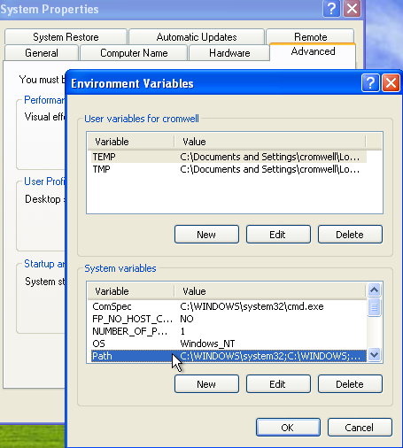
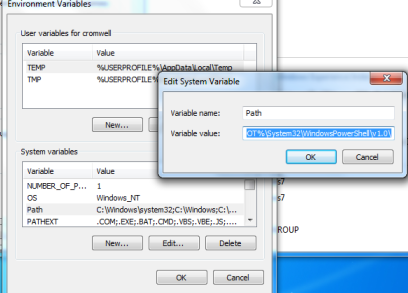

Environment setting¶
For MS-Windows:Install the cygwin.¶
A window data need to compile the script. This compiler invokes a gcc’s preprocessor.
Install the cygwin procedure in the MS-Windows environment as follows..
Download the cygwin¶
down load setup-x86.exe or setup-x86_64.exe
Installation by choosing the “Devel” package¶
In the “Select Packages”, the Devel Default → Install .

Install¶
Install as instructed.
Add the PATH of enviroment variable .¶
Add the system path to “bin” of the installed folder .
It has become in the following folder by the default
C:\cygwin\bin or c:\cygwin64\bin(64bit version)
Note
It is not the environment variable of cygwin, it is the system environment variable of windows.
Detailed procedure is as follows.
Click the start menu of windows.
Input “sysdm.cpl” in Search programs and files. New window that named System Properties will appear.
Select the Advanced panel, and click the Enviroment Variables button.
Now that you are looking at the list of system environment variables, find the Path value in the list. You may have to scroll down to find it. Click on the Path value to highlight it as shown here, and then click the Edit button.
A new window will appear with the current value highlighted. Do not remove or change the current value, or you will wreck your user settings!
You will see that the PATH variable already has a default value of something like the following:
%SystemRoot%\system32;%SystemRoot%;%SystemRoot%\System32\Wbem
The semicolons separate the values, so there are three components in this default PATH:
%SystemRoot%\system32
%SystemRoot%
%SystemRoot%\System32\Wbem
You want to add ;c:\cygwin\bin to the end of that list, so it becomes something like this. However, do not change the entire string to this example! Leave the existing PATH assignment as you find it and simply add your new directories.
%SystemRoot%\system32;%SystemRoot%;%SystemRoot%\System32\Wbem;c:\cygwin\bin
The confirmation¶
Open a windows command prompt(not the cygwin’s bash!), try typing “gcc –version”. If you have been installed,it is displayed as follows.

When you can not get the same result, you try to check two things.
For OSX:Install the Command Line Tools in Xcode.¶
If you can not find the gcc on the terminal, please install the Command Line Tools in Xcode.
A preparation for the multi-lingual¶
Install the Python 2.7¶
If you make a character resources for multi-lingual , use MS-Excel.This tool for data conversion from a Excel file is written in Python.
Install the Python2.7
Add the windows system path for the Python.¶
Add the system path of the installed folder .
Please refer to here how to set the python path.
The path depends on the version of Python you have installed.The default path is:
C:\Python3x
Install the Python 2.7¶
This multiligual message data tool used the openpyxl library. you need to install this library.Install the openpyxl on the command prompt as follows.
pip install pywin32